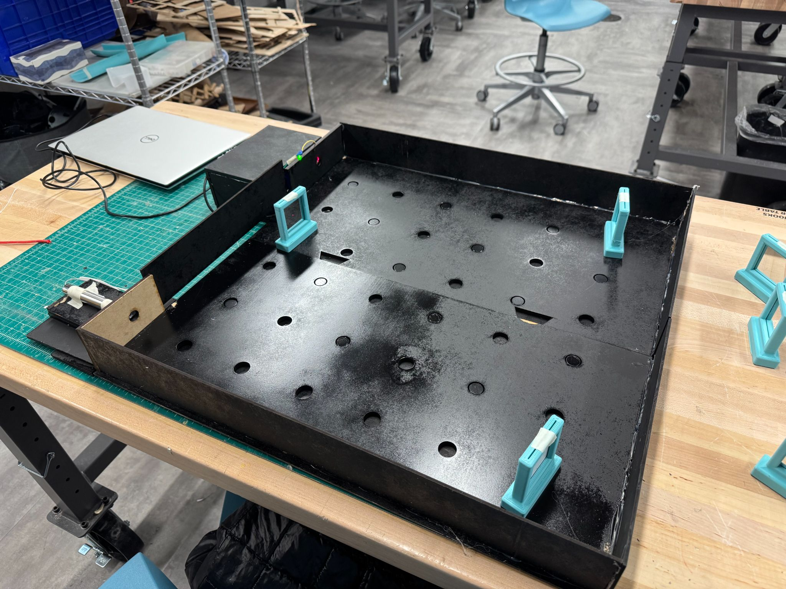
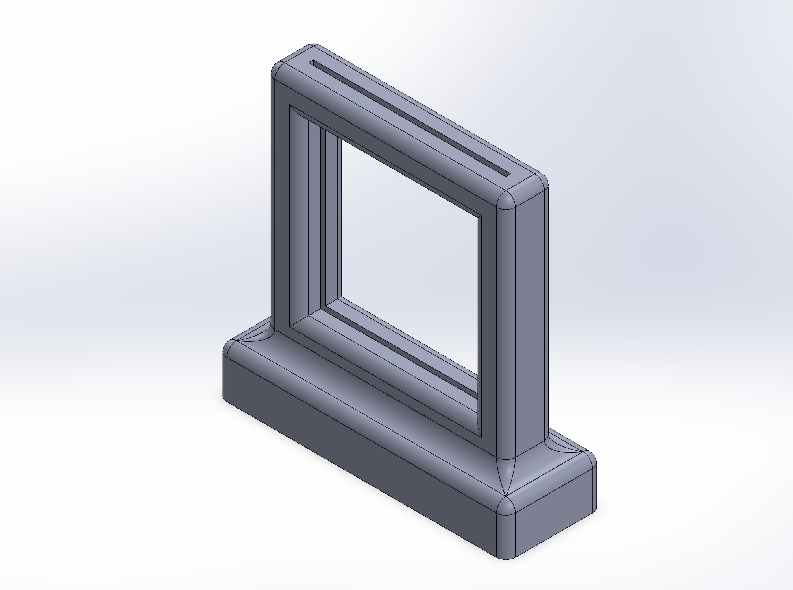
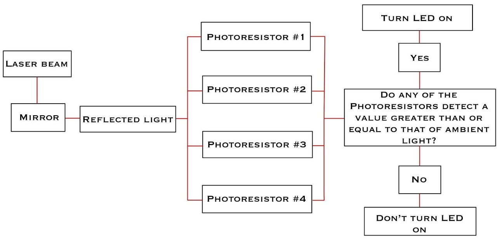
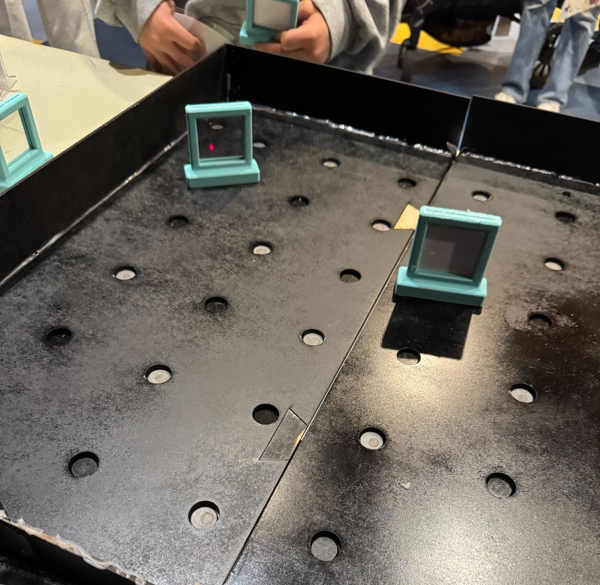
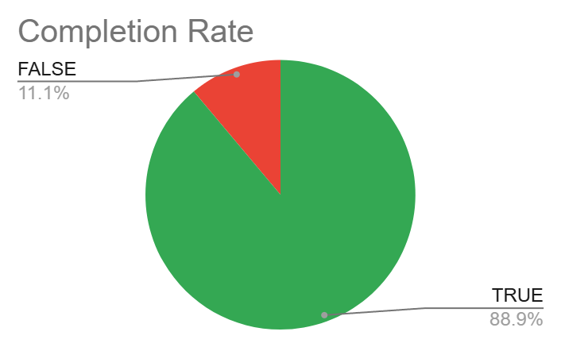
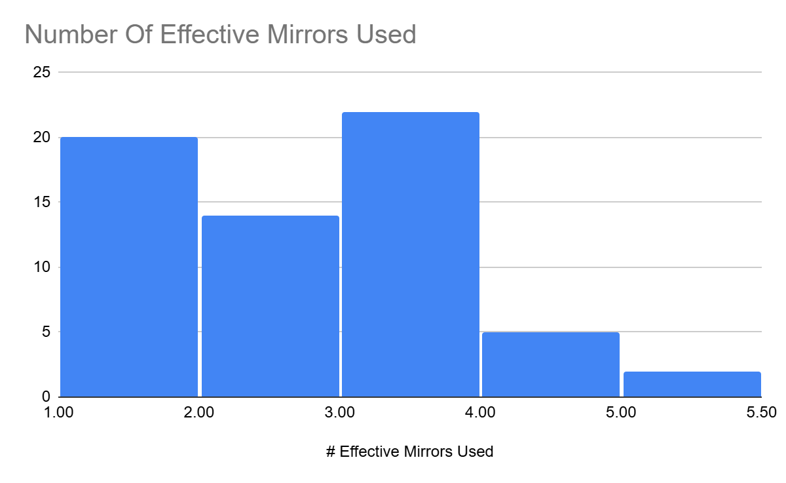

Laser Maze Game
January 2025 – April 2025

Overview
Laser Vision Maze is an interactive puzzle game built for Boston Children's Museum as part of a 12-week team project with Andre Chung and Kevin Chin. Players place adjustable mirrors on a pegboard to redirect a laser beam through the maze and hit a hidden photoresistor target, which triggers an LED celebration when struck.
My contributions covered the full enclosure (designed in AutoCAD, laser cut, assembled, and painted), the seven 3D-printed mirror stands (designed in SolidWorks), and the Arduino firmware that handles laser detection.
Enclosure
The maze, wiring channel, and laser housing were designed in AutoCAD and laser cut from MDF, then painted matte black to reduce light reflection inside the play area. The pegboard floor has a grid of holes with embedded magnets that hold the mirror stands in place, letting players snap mirrors into any position quickly. Aligning the target and laser holes across the assembled panels was the trickiest part. Wood warping after painting threw off some of the alignment and is something I'd address in a future revision with a more dimensionally stable material.

Mirror Stands
Seven mirror stands were designed in SolidWorks and 3D printed in PLA. Each stand holds a small glass mirror at a fixed angle and has a magnetic base that snaps into the pegboard holes. The snap-in design made it easy for young visitors to reposition mirrors without needing to align them manually, which kept gameplay moving.

Firmware
The detection system runs on an Arduino RedBoard reading four photoresistors. Each photoresistor sits behind the target, and the firmware continuously compares their readings against a calibrated ambient light threshold. When the laser hits any of them, the value crosses the threshold and an LED indicator lights up. Detection response time is under 100 ms, fast enough to feel instant to the player. The threshold calibration was important because the museum's ambient lighting was much brighter than our development environment, and an uncalibrated threshold caused false positives during early testing.

Museum Deployment
The game ran at Boston Children's Museum and was played by 63 visitors over the testing window. Watching kids problem-solve with the mirrors was the best part, especially when they figured out unexpected solutions using more mirrors than necessary.

Results
Across 63 players, 88.9% successfully completed the maze, using an average of 2.29 mirrors per attempt. The completion rate suggests the difficulty was well balanced for the target age group.


The main improvement areas were durability and warping over the deployment period, and average play time running longer than ideal which created wait lines. A more rigid enclosure material and a slightly smaller maze grid would address both in a future iteration.